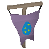

")
Easter 2008 Event guide
Introduction
|  | The Easter Bunny, ever prone to having his schemes get out of hand, has once again found himself in a bit of a pickle this Easter. While he was working on his latest 'Make Easter More Exciting' scheme (well, redecorating, to be honest), he forgot to check on his eggs - when you live underground this isn't a great idea, and a horde of wee beasties got into his stocks and ate all the eggs!
Who can save Easter for all the children of RuneScape? |
 |
The Event
Introduction - The Great Chocolate Caper
 This Easter is the busiest yet for everyone's favourite giant pink bunny. His sugary stockpile has been raided by rodents so, to keep up with demand, he's had to find a novel way of procuring chocolate to make his famous treats - the gooey gaze of the chocatrice! You can help by incubating your own chocatrice and harvesting the chocolate it makes. You'll need to prove yourself useful first, so be prepared for an egg hunt to kick things off.
This Easter is the busiest yet for everyone's favourite giant pink bunny. His sugary stockpile has been raided by rodents so, to keep up with demand, he's had to find a novel way of procuring chocolate to make his famous treats - the gooey gaze of the chocatrice! You can help by incubating your own chocatrice and harvesting the chocolate it makes. You'll need to prove yourself useful first, so be prepared for an egg hunt to kick things off.
Location - Where Bunnies Dare
You can find your way to the Easter Bunny's warren of rabbits, chocolate and rodents by heading south from Falador to the point marked on the map above. You should note the sign near the hole you're looking for, as it tells you that you cannot take pets or familiars into the Easter Bunny's realm - creatures like that frequently make rabbits their lunch, so it's understandable!To get started, try shouting down into the hole.
Part One - The Great Easter Egg Hunt of '69
In all the five ages of RuneScape, it's unlikely that so many eggs will be hunted and found at Easter. You don't get to keep these eggs, though, as the Easter Bunny needs them to prepare chocatrice eggs.
When you've found three eggs, go back to the Easter Bunny's humble abode to be allowed in.
Part Two - It's Alive! Aliiiiive! Well, not yet.
 When you've gone down the rabbit hole, you'll be able to go and speak to the Easter Bunny, that jovial, giant, pink rabbit, who will explain his dilemma. To get on with creating your own chocatrice, he'll direct you to grab one of his many cockatrice eggs and dip it into the enormous bowl of liquid deliciousness in the centre of the chamber.
When you've gone down the rabbit hole, you'll be able to go and speak to the Easter Bunny, that jovial, giant, pink rabbit, who will explain his dilemma. To get on with creating your own chocatrice, he'll direct you to grab one of his many cockatrice eggs and dip it into the enormous bowl of liquid deliciousness in the centre of the chamber.
By dipping a cockatrice egg into this mystically gooey pool, you will discover that the egg is no longer any ordinary cockatrice egg: it will become a super-tasty chocatrice egg. Of course, the egg won't do anything by itself, as it needs to be carefully incubated so that the lip-smackingly awesome chocatrice can be hatched.
Part Two-and-a-bit - Recipe for a Chocatrice
|
 |
If you've followed the recipe correctly, you'll just have enough time after the egg hatches to see the chocatrice flap away to cause delicious havoc...
You'd best go and speak to the Easter Bunny.
Part Three - He said what?
 It's a lucky thing that the Easter Bunny is quick on all four of his feet, because he's managed to snag the chocatrice and teleport it into the storage warren where all the snails, cockroaches, spiders and rats are hiding out, relaxing after their massive chocolate feast.
It's a lucky thing that the Easter Bunny is quick on all four of his feet, because he's managed to snag the chocatrice and teleport it into the storage warren where all the snails, cockroaches, spiders and rats are hiding out, relaxing after their massive chocolate feast.
The Easter Bunny, still enormous and the colour of raw salmon, will explain to you that the chocatrice can turn all of those critters into chocolate chunks, which can then be used to make new eggs. To do so, however, you need to go through a decidedly small hole, so he'll need to make you a wee bit smaller and... err, furrier. A short moment later, you'll discover that you have a strange desire for carrots.
 When you've come over all leporidical, you can head south to the warren entrance. Once through, you'll encounter your chocatrice, who's now considerably larger than you are and wouldn't mind a bunny-shaped snack. Luckily for you, he's entirely incapable of attacking unless he's really, really angry. You can use this to your advantage, of course, by leading him deeper into the tunnels and telling him all sorts of lies about the creatures you find there.
When you've come over all leporidical, you can head south to the warren entrance. Once through, you'll encounter your chocatrice, who's now considerably larger than you are and wouldn't mind a bunny-shaped snack. Luckily for you, he's entirely incapable of attacking unless he's really, really angry. You can use this to your advantage, of course, by leading him deeper into the tunnels and telling him all sorts of lies about the creatures you find there.
To get the chocatrice angry enough to fire his Sweet Gaze of Chocolate-Flavoured Rage and PetrificationTM, you can click on the target icon in your Summoning interface then click on the critter you'd like the chocatrice to viciously and deliciously assault.
You'll then tell him that the target has said or done something incredibly impolite, which will lead him to unleash all of the candy-like fury within him. Providing he can see the target of his rage, you'll soon find that the creature is no longer in their normal form - instead, they'll become a remarkably tasty pile of chocolate chunks.
When you've collected at least 12 chocolate chunks, you can head back to the Easter Bunny to tell him about it.
Rewards
Ask the epically-sized and close-to-fuchsia-coloured rabbit to transform you back into a human so that you can reach the bowl of the chocolate mixer (which is in the north of the cavern) and place your chocolate chunks in it.
When you've done this, you can speak to the Easter Bunny again to claim your reward!

More articles in
Holiday Guides
|
|